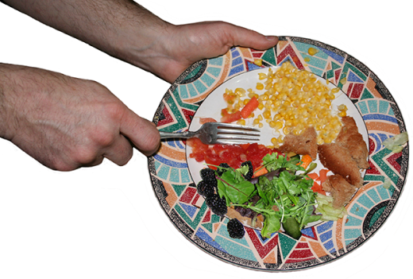

Second Chance Foods was founded by college students
to fight food waste. After one of our founder
members
worked at our university dining hall. He realized that
so much food was going uneaten and
thrown daily. But
what if there was a way to salvage that food and use it
or give it to those
incapable of getting a meal.
Founded in 2022, Second Chance Foods made it a life
mission to
help reduce food waste and feed our local
communities. As a nonprofit organization, we are proud
to
partenr up with many local restaurants and schools
to reporpouse their meals, in order to give back to
those
that might go hungry.